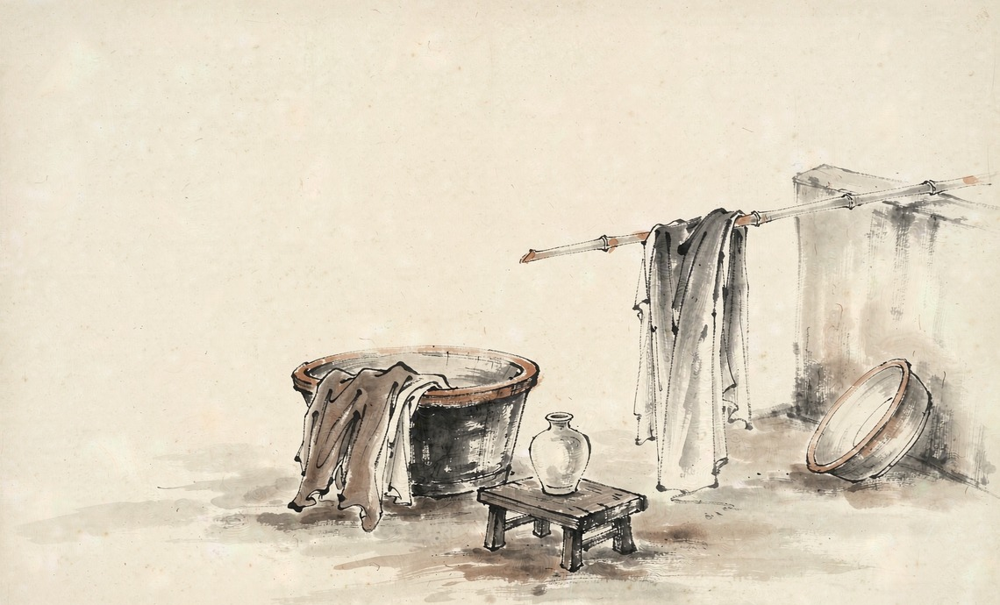
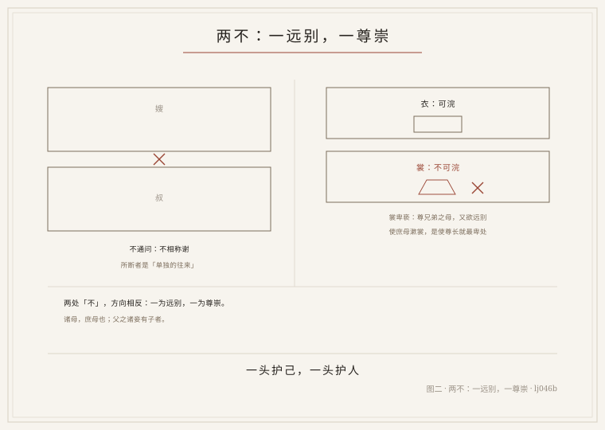

曲礼上 · 一·四十八 · 第 46 课
嫂嫂与小叔子之间不通信问；庶母可以替你洗衣，不可以替你洗裳。
说什么事：嫂叔不通问，诸母不漱裳。
落在哪一层：教。上节讲男女之不共物，此节讲亲属之间的两处「不」。
为何编在此位：一·四十七讲泛言之别，此节讲亲属近处之别；越是近亲，线越要显。
【经】嫂叔不通問，諸母不漱裳。
嫂叔不通问 郑注：「通问谓相称谢也。」——不是不许见面，是不相称谢、不相通候问。
诸母 郑注：「诸母，庶母也。」疏：「诸母谓父之诸妾有子者。」——父之妾而有子者。
不漱裳 郑注：「漱，浣也。庶母贱，可使漱衣，不可使漱裳。裳贱，尊之者亦所以远别。」疏：「诸母贱，乃可使漱浣盛服，而不可使漱裳，裳，卑亵也，欲尊崇于兄弟之母，故不可使漱裳耳，又欲远别也。」
嫂嫂与小叔子之间不相通问。庶母可以洗衣服，不可以洗下裳。
两处「不」，方向相反：对嫂叔是「不使近」，对庶母是「不使卑」。前者防嫌，后者尊人；同一条界线，一头护己，一头护人。
第一层 不通问：不称谢 注把「通问」限在「相称谢」。称谢是往来之始：谢一次，就有第二次；有第二次，就有单独的往来。礼在这里截断，不是截断亲，是截断单独。
第二层 诸母不漱裳：不使尊长碰卑亵 疏说得清楚：盛服可浣，裳不可。裳是下体之衣，最卑亵；让父之妾去洗它，是把尊长按到最卑处。所以此条不是防淫，是「尊崇于兄弟之母」。
第三层 两「不」的指向 嫂叔之不，为远别；诸母之不，为尊崇。同一节里，礼既防嫌又护尊，可见「别」从来不是单向的压制。
第四层 「有子」二字 疏特标「诸妾有子者」。有子则为诸母，无子则否；名分定了，礼才落得下去。
与今日何干 今日叔嫂通问无碍，但「不让长辈替你处理最私的衣物」一条仍在：请人帮忙，帮到哪一层为止，是敬。
| 左 | 右 |
|---|---|
| 嫂叔不通问 | 通问谓相称谢也 |
| 诸母 | 庶母也；父之诸妾有子者 |
| 诸母不漱裳 | 可使漱衣，不可使漱裳 |
| 何以不漱裳 | 裳卑亵；尊兄弟之母，又欲远别 |
| 两不之指 | 一为远别，一为尊崇 |
| 有子为诸母 | 名定而后礼行 |

